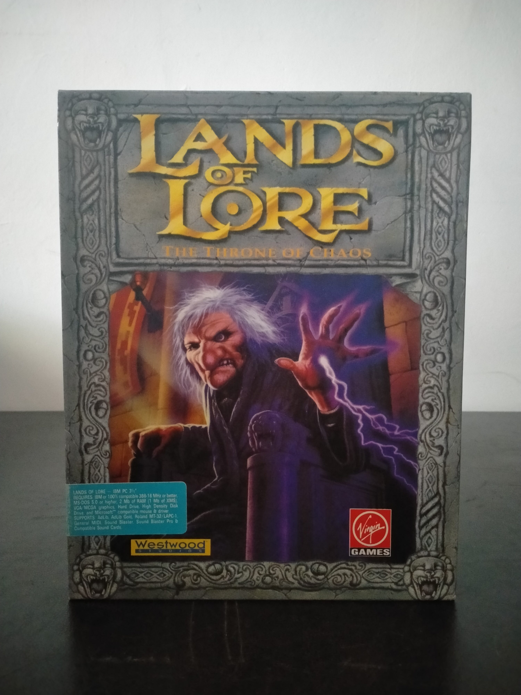

Ficha #000130
Lands of Lore: The Throne of Chaos
Lands of Lore: The Throne of Chaos es un juego de rol en primera persona desarrollado por Westwood Studios y publicado originalmente en 1993. Concebido como una aproximación más accesible al dungeon crawler occidental, combina exploración de mazmorras, desplazamiento por casillas, formación de grupo, resolución de puzles y combate en tiempo real dentro del mundo fantástico de las Tierras. La aventura comienza cuando la hechicera Scotia amenaza el reino y el jugador debe encontrar la Piedra de la Verdad para detenerla, incorporando progresión de personajes, magia, equipamiento, criaturas animadas y una presentación audiovisual especialmente cuidada para los compatibles PC de su época. Su interfaz gráfica, el mapa automático y la simplificación de determinadas reglas estadísticas facilitaron la entrada al género sin eliminar su profundidad exploratoria. Esta edición española en caja grande fue distribuida por Arcadia Software bajo el sello Virgin Games, está formada por ocho disquetes de 3,5 pulgadas y conserva una localización al castellano de especial interés documental dentro del catálogo temprano de Westwood anterior a su consolidación mundial con Command & Conquer.
- Formato
- Big Box
- Plataforma
- MsDos
- Género
- Rol Dungeon crawler Rol en primera persona Fantasía Combate en tiempo real
- Serie
- Todos Big Box
- Desarrollador
- Westwood Studios
- Distribuidor
- Virgin Games, Arcadia Software
- EAN
- 5013715045506
Contenido de la edición
- Caja de cartón Big Box
- Manual de instrucciones
- Documentación de referencia
- 8 disquetes de 3,5 pulgadas
Preservación
- Protección
- No determinado
- Formato recomendado
- Otro
- Jugable en virtualización
- Sí
La edición debe preservarse mediante una imagen individual y verificación sectorial de cada uno de los ocho disquetes de 3,5 pulgadas, conservando además los manuales y la documentación localizada. La ejecución es viable en un entorno MS-DOS virtualizado como DOSBox, siempre que se mantenga correctamente el orden de instalación de los discos.